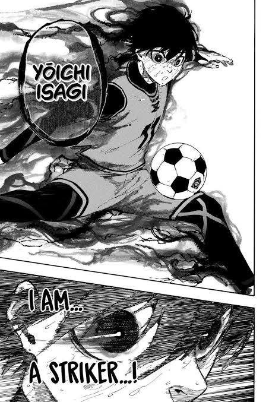
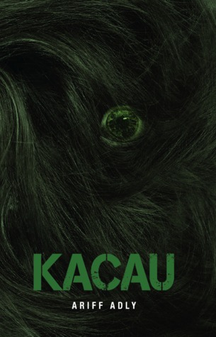
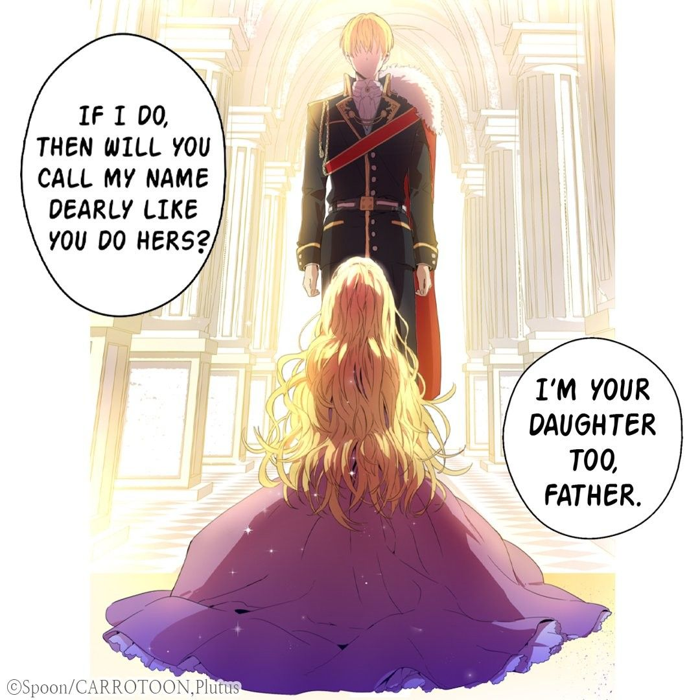

1) Knitting crochet
My interest in this hobby was sparked by the variety of knitting videos on social media. I am currently creating a totebag for my sister as a present.

2) Reading
I've enjoyed reading for a long time. Whenever something piques my curiosity, I will read it. For example, Novel, Manhwa, Manga, Comic, e-book, etc. I enjoy reading books in the romance, sports, fantasy, mystery, psychology and thriller genres.
  